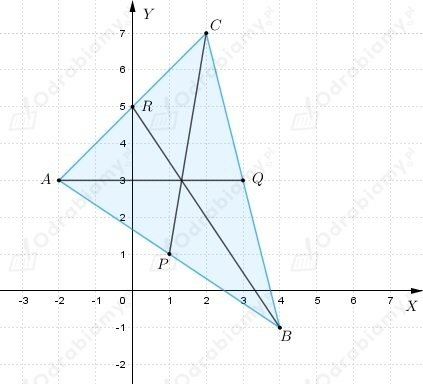
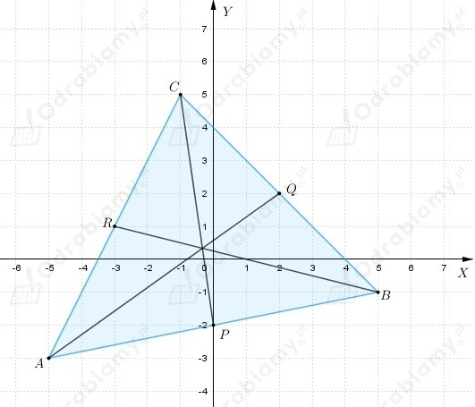

a)
Z treści zadania wiemy, że
Wyznaczmy środek odcinka AB
Początek układu współrzędnych to punkt O(0, 0), zatem należy obliczyć długość odcinka OS.
b)
Z treści zadania wiemy, że
Wyznaczmy środek odcinka AB
Początek układu współrzędnych to punkt O(0, 0), zatem należy obliczyć długość odcinka OS.
c)
Z treści zadania wiemy, że
Wyznaczmy środek odcinka AB
Początek układu współrzędnych to punkt O(0, 0), zatem należy obliczyć długość odcinka OS.
Z treści zdania wiemy, że
S - środek odcinka AB
a)
Niech B(x, y)
Korzystając z definicji środka odcinka dostajemy
zatem
Wnioskujemy, że
b)
Niech B(x, y)
Korzystając z definicji środka odcinka dostajemy
zatem
Wnioskujemy, że
c)
Niech B(x, y)
Korzystając z definicji środka odcinka dostajemy
zatem
Wnioskujemy, że
Z treści zadania wiemy, że
a)
Wiemy, że środkiem odcinka AB jest punkt (-1, -2).
Przyjmijmy oznaczenie
Środek odcinka dzieli odcinek na dwie równe części.
Zatem |AB|=2|AS|
b)
Wiemy, że
Z definicji środka odcinka dostajemy
zatem
Obliczmy długość odcinka AB
Z treści zadania wiemy, że punkty
są wierzchołkami rombu.
Należy obliczyć długości przekątnych rombu OABC, czyli długości odcinków OB i AC, zatem
Aby obliczyć pole prostokąta wyznaczmy środki boków rombu.
Niech
P - środek boku OA
Q - środek boku AB
S- środek boku OC
Pole prostokąta wyznaczonego przez środki boków rombu OABC
Z treści zadania wiemy, że
a)
Wiemy, że skoro ABCD jest prostokątem, to |AB|=|CD| oraz |AD|=|BC|, więc
Zatem wyznaczmy długości boków AB i BC
Dostajemy
b)
Wiemy, że romb to czworokąt, którego wszystkie boki są jednakowej długości.
Zatem wyznaczmy np. środek boku AD i środek boku AB, by móc wyznaczyć długość
boku rombu, który jest odcinkiem łączącym środki boków prostokąta.
Niech
P - środek boku AB
R - środek boku AD
Zatem
Obliczmy długość boku rombu
Dostajemy
| Przypomnijmy, że w każdym równoległoboku przekątne dzielą się na połowy. |
a)
Z treści zadania wiemy, że
Wyznaczmy współrzędne środków odcinka AC i odcinka BD
Zauważamy, że środek przekątnej AC i środek przekątnej BD jest taki sam.
Wnioskujemy, że czworokąt ABCD jest równoległobokiem, ponieważ jego przekątne dzielą się na połowy.
b)
Z treści zadania wiemy, że
Wyznaczmy współrzędne środków odcinka AC i odcinka BD
Zauważamy, że środek przekątnej AC jest różny od środka przekątnej BD.
Wnioskujemy, że czworokąt ABCD nie jest równoległobokiem, ponieważ jego przekątne nie dzielą się na połowy.
Z treści zadania wiemy, że punkty
są wierzchołkami równoległoboku ABCD.
Obliczmy współrzędne punktu S, który jest środkiem odcinka AC
Wyznaczmy współrzędne wierzchołka D.
Niech
Skoro czworokąt ABCD jest równoległobokiem, to wiemy że jego przekątne
dzielą się na połowy, zatem środek odcinka BD ma takie same współrzędne
jak środek odcinka AC, zatem
dostajemy
Wnioskujemy, że D(7, 5).
a)
Wiemy, że punkty
są wierzchołkami trójkąta.
Do wyznaczenia środkowych trójkąta potrzebujemy znać współrzędne środków boków trójkąta ABC.
Przyjmijmy oznaczenia jak na rysunku poniżej

Równanie prostej AQ możemy odczytać z rysunku
Wyznaczmy równanie prostej BR
Podstawiając do pierwszego równania b1=5 dostajemy
zatem
Wyznaczmy równanie prostej CP
Podstawiając do pierwszego równania b2=1-a2 dostajemy
zatem
b)
Wiemy, że punkty
są wierzchołkami trójkąta.
Do wyznaczenia środkowych trójkąta potrzebujemy znać współrzędne środków boków trójkąta ABC.
Przyjmijmy oznaczenia jak na rysunku poniżej

Wyznaczmy równanie prostej BR
Podstawiając do pierwszego równania b1=-1-5a1 dostajemy
zatem
Wyznaczmy równanie prostej AQ
Podstawiając do pierwszego równania b1=-3+5a2 dostajemy
zatem
Wyznaczmy równanie prostej CP
Podstawiając do drugiego równania b3=-2 dostajemy
zatem
Z treści zadania wiemy, że punkty
są środkami boków trójkąta.
Przyjmijmy, że wierzchołki trójkąta to punkty A, B i C oraz punkt P - środek boku AB,
punkt Q - środek boku BC, punkt R - środek boku AC.
Niech
Z definicji środka odcinka dostajemy
Więc dostajemy, że
Podstawmy (3) do (2)
Podstawmy (4) do (1)
Powracając do (3) i (4) otrzymamy
Wyznaczyliśmy pierwsze współrzędne wierzchołków trójkąta ABC. Aby wyznaczyć
drugie współrzędne postępujemy analogicznie.
Zatem korzystając kolejny raz z definicji środka odcinka otrzymamy
Podstawmy (7) do (6)
Podstawmy (8) do (5)
Powracając do (7) i (8) otrzymamy
Wnioskujemy, że współrzędne wierzchołków trójkąta, to
Możemy obliczyć pole trójkąta korzystając ze wzoru
zatem
Z treści zadania wiemy, że punkty
są wierzchołkami rombu ABCD.
Należy uzasadnić, że przekątna BD tego rombu jest zawarta w prostej x-y-3=0.
Zatem wyznaczmy równanie prostej BD wiedząc, że prosta AC jest również przekątną
rombu ABCD, czyli prosta AC i prosta BC dzielą się na połowy i przecinają się pod kątem prostym.
Wyznaczmy środek przekątnej AC (będzie to również środek przekątnej DB).
Wyznaczmy współczynnik kierunkowy prostej AC
Skoro prosta AC jest prostopadła do prostej BD, to
Wiemy, ze punkt S należy do prostej BD, więc możemy wyznaczyć brakujący współczynnik
Wnioskujemy, że równanie prostej BD możemy zapisać następująco
więc po przekształceniu dostajemy
co kończy dowód.